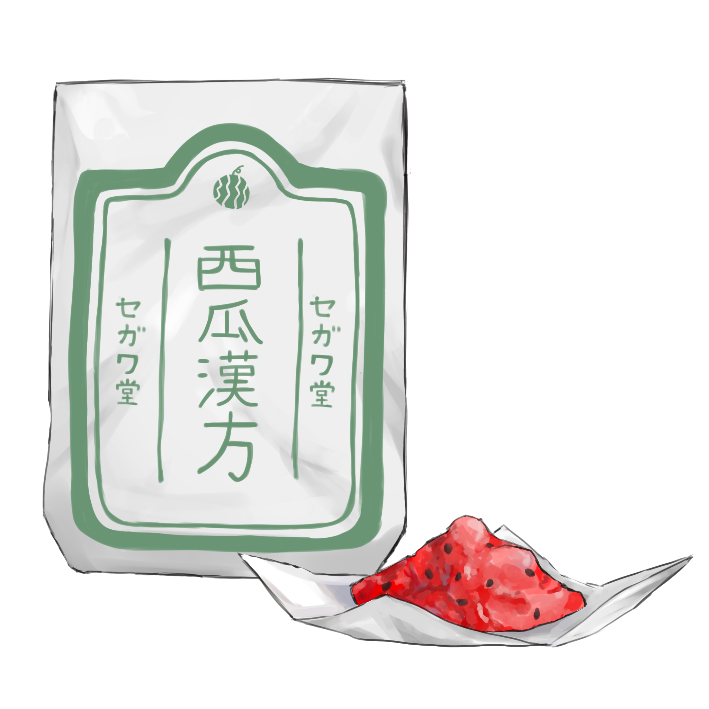

西瓜漢方

【効果・効能】
夏の熱気で乱れやすい体内の水と気の巡りを整える清涼漢方です。
水分循環を促し、こもった熱や
夏特有のぼんやり感・疲労感をやさしく鎮めます。
さらに、夏の訪れに伴う期待感を自然に呼び起こす、季節限定の漢方です。
【成分】
・西瓜(新潟県産)
・まな板
・包丁
・香料
・染料(赤)
【服用時点】
夏の暑さで水分やワクワク感が不足していると感じたとき
【副作用】
・まれに服用から2~3日間、西瓜特有の甘い方向が漂います。
・これは成分の巡りによる一時的な現象であり、自然に収まります。
【生産地】
カナガワ
【製造会社名】
セガワ堂
製造者からひとこと
毎年夏、新潟の祖父母が自家製の小ぶり西瓜を沢山届けてくれます。
新潟の豊かな自然で大切に祖父母が育てた
甘みの強い果肉がぎっしりと詰まった西瓜は
私にとって世界一美味しい西瓜と言えるでしょう。
中学生の時に突如祖父母の西瓜の美味しさに目覚めたときから
毎年夏沢山送られてきた西瓜は2日で1玉ペースで
私1人が平らげてしまっています
（自分でも書いていて恐ろしい気持ちになりました）。
西瓜を全て一口サイズにカットして、タッパーに詰め込み
冷蔵庫でキンキンに冷やして食べるという
祖父母に教えてもらった食べ方が最高に美味しいです。